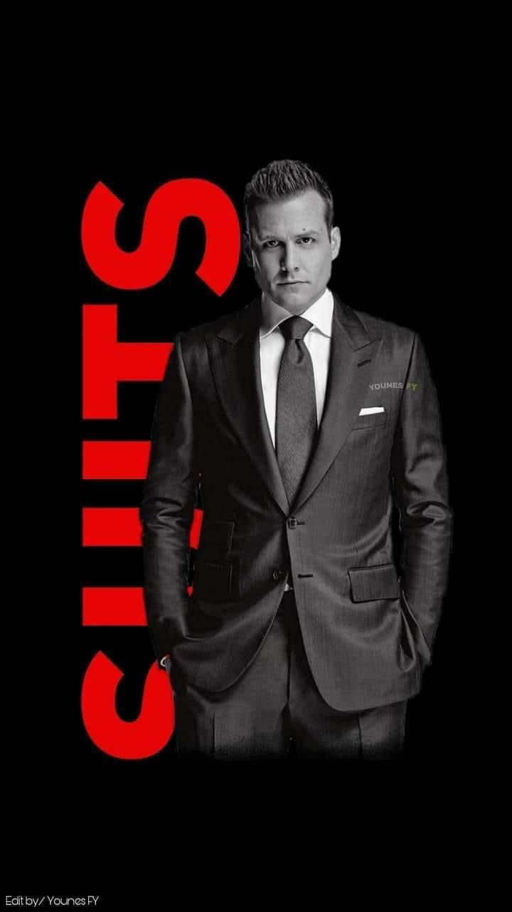
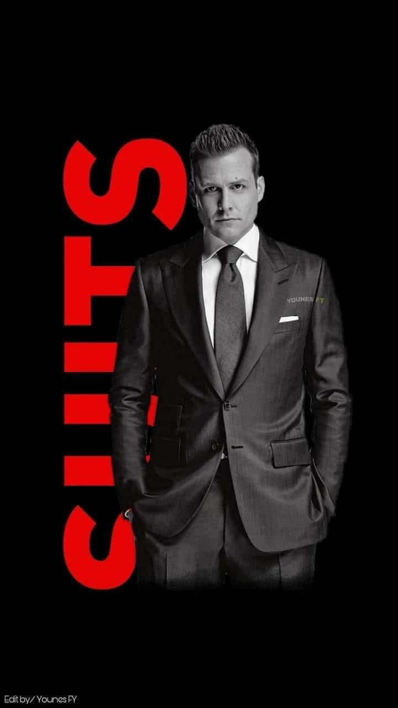

About Me
Hi, my name is Ken Bautista, 20 year old, Born and
raised in Manila, Philippines.
I am a first-year undergraduate student at the FEU
Institute of Technology, pursuing a Bachelor of
Science in Information Technology with a
specialization in Cybersecurity.
Hobbies
During my free time, I enjoy walking, reading books,
watching movies or TV series, and playing online
games such as Valorant, League of Legends, and
Roblox. These activities help me relax, stay
inspired, and maintain a healthy balance between
productivity and enjoyment.
"You cannot lose what you do not have." — Marcus Aurelius
 

Technical Skills
I have a basic understanding of programming
in C++, along with fundamental skills in
HTML, CSS & JS. I can write simple code
structures, create basic functionalities and
design static web pages. Although I'm still
at the beginner level, I am actively
learning and improving through practice and
study.
Soft Skills
I am a flexible individual who can work well both in teams and independently.
I have strong problem solving skills and can perform effectively under pressure.
My ability to stay calm and focused helps me navigate challenges efficiently.
I also have basic design knowledge, which allows me to approach tasks with a
creative and structured mindset.